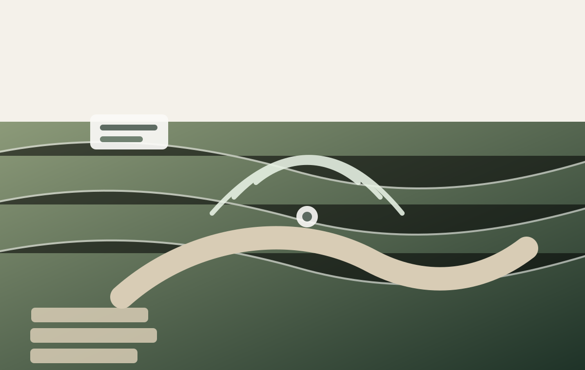
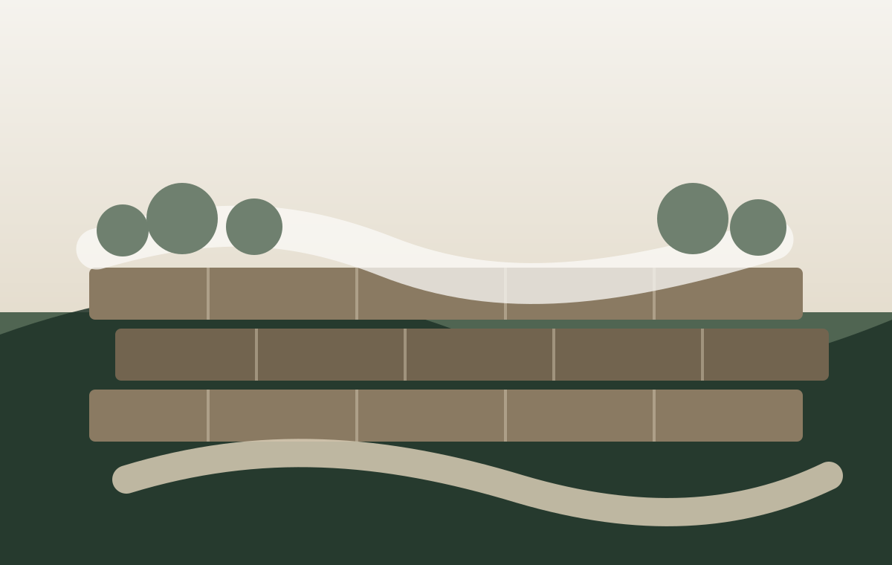
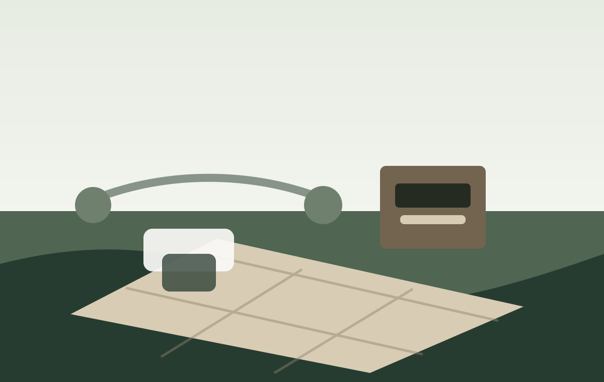

French Drain Installation
Problem: Standing water and drainage issues.
Solution: French drain with surrounding landscape repair.
Projects
From drainage corrections to front yard upgrades, CEW helps homeowners fix problem areas and finish outdoor spaces with clean, practical work.
Problem: Standing water and drainage issues.
Solution: French drain with surrounding landscape repair.

Problem: Tired front yard beds.
Solution: Updated layout, planting, and clean finishing details.

Problem: Yard needed a complete improvement plan.
Solution: Landscaping, irrigation, and sod handled together.

Problem: Unusable slope or erosion issue.
Solution: Retaining wall and finished landscape area.

Problem: Outdoor area needed structure and usability.
Solution: Patio or kitchen area designed for the property.
Problem: Overgrown beds and dull curb appeal.
Solution: Cleanup, edging, mulch, rock, and fresh presentation.